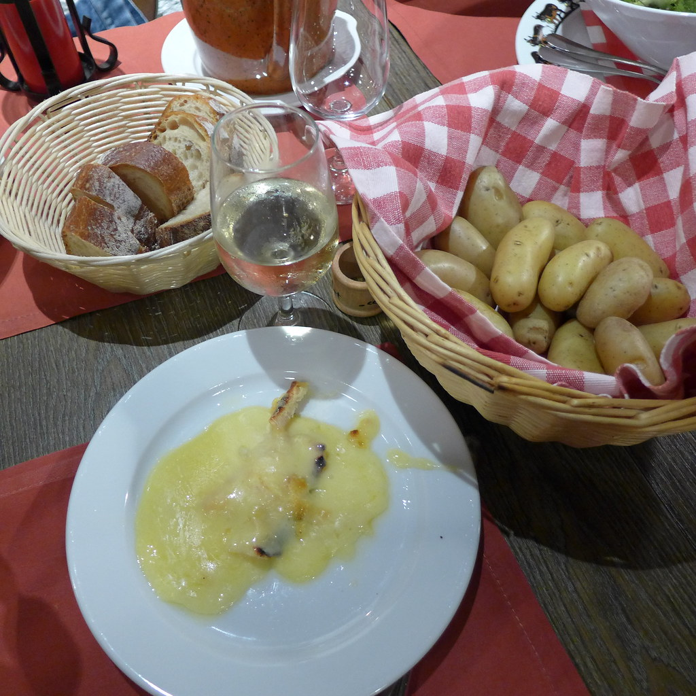

予約や買い物をAIや代行サービスに任せる仕組みを、自分の会社で使うか迷っている方に向けた記事です。
9月22日、翌日のお店の予約を、ネットの予約代行サービスに頼みました。結果から言うと、途中で自分で動くことになりました。
AIエージェントを作っている会社の代表が、任せる側に回った記録です。何が見えていて、何が見えていなかったかを、画面に出ていた文言のまま書き残します。
電話でしか予約できない店だった
条件は3つありました。
- チーズがおいしい店
- 9月23日（水・秋分の日）の夕方。20時に西麻布で別の予定があるので、19時40分ごろには店を出たい
- 開始はできるだけ早く
候補を送ると、相手がスイス料理に興味を持ってくれたので、老舗のスイス料理店に決めました。
お店の公式サイトでは、予約は電話だけでした。食べログのネット予約にも対応していません。
そこで、店への電話を代わりにかけて予約を取ってくれる「AutoReserve」を使いました。店舗ページには「予約可・予約代行」と出ていました。予約画面の手数料は1,260円。ヘルプには、手数料は予約が成立した場合だけかかると書かれていました。
ただ、店舗ページの下には「この店舗情報はユーザーによって登録されたため、情報の正確性は保証されません」ともありました。
画面には「16時00分に電話します」
リクエストを出すと、画面はこうなりました。
- リクエスト中
- まだ予約は成立していません
- お店に電話確認中です
- AutoReserveがお店に予約の可否を確認します
- 2026年9月22日(火) 16時00分に電話します
16時を過ぎても、通知は来ませんでした。16時49分の時点でも、画面は変わっていません。
問い合わせフォームは見つかりませんでした。運営会社に電話すると、AIが応答し、話は前に進みませんでした。最後にサポートのメールアドレスに連絡しました。
17時05分、予定時刻だけが変わっていた
メールを送ったあと、AutoReserveから「17時04分に予約します」という内容のメールが届きました。
17時05分に画面を見ると、こうなっていました。
- リクエスト中
- まだ予約は成立していません
- お店に電話確認中です
- 2026年9月22日(火) 17時04分に電話します
16時00分が17時04分に変わっていました。変わった理由も、変えたという知らせも、画面にはありませんでした。
16時に実際に店へ電話したのかどうかは、私には分かりません。時刻が変わったのが私のメールのせいなのかも、確かめられていません。メールしたから動いたのでは、と感じてはいますが、推測です。
結局どうなったか
結局、自分でお店に電話して、予約を取りました。代行のリクエストの画面は、そのときもまだ「電話確認中」のままでした。
代行が悪いという話ではありません。翌日の予約で、待てる時間に限りがあった。それだけです。ただ、待つか自分で動くかを決める材料が、画面にはありませんでした。
任せる側からは、何が見えていなかったか
電話の代行そのものは便利な仕組みです。電話でしか取れない店を、ネットから頼めます。
待っている間、画面に出ていなかったのは、この3つでした。
- いまどの段階か
「電話確認中」の一言だけでした。電話をかけたのか、つながらなかったのか、まだかけていないのかで、待つか自分でかけるかの判断は変わります。
- 予定が変わった理由
時刻は変わりましたが、理由は出ていませんでした。理由が一言あれば、待つか自分で動くかを決める材料になります。
- いつまでに決まらなければ、自分で動くべきか
翌日の予約です。「何時までに成立しなければ、ご自身で電話を」という線が示されていれば、窓口を探す前に判断できます。
うちもLINEで問い合わせや予約に答えるAIを作っています。お客さんを待たせる画面に、いまの段階と、次に何が起きるかと、自分で動くべき期限が出ているか。自社の仕組みを見直すときの確認項目がそのまま手に入りました。
まとめ
- 電話でしか予約できない店を、予約代行サービスに頼んだ
- 電話の予定時刻が、理由の表示なしに16時00分から17時04分に変わった
- 実際に16時に電話したのか、時刻が変わった理由は何か、どちらも確認できていない
- 任せる側に必要なのは、いまの段階、変更の理由、自分で動くべき期限の3つだった
AIに仕事を任せる仕組みを社内やお客さん向けに入れるとき、「待っている人に何を見せるか」から一緒に考えたい方は、ご相談ください。
待っている人に、何を見せるか
問い合わせや予約をAIに任せる仕組みを入れるとき、いまの段階・変更の理由・自分で動くべき期限を画面に出せているか。自社の仕組みの確認から一緒にやります。初回のご相談は無料です。
無料相談を予約する →